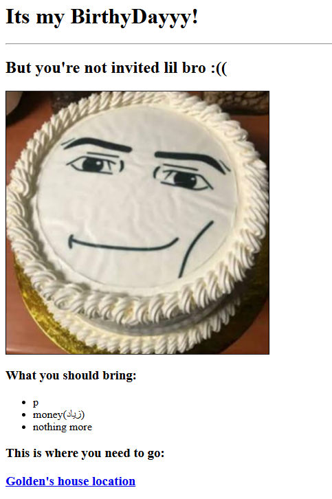
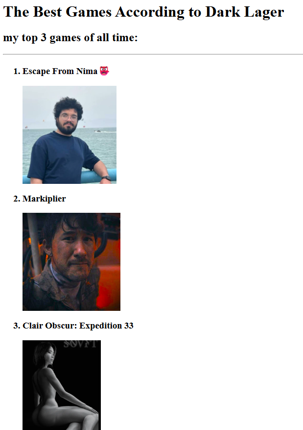

Hi, Im black and this is my website
hi in smaller font
Why play Roblox?
Its good
you can play with little people
waterpark simulator
Projects I made:
Birthday invite Project

Game Ranking Project

About me
Contact Me